Bamazon Demo
This page is a colleciton of screenshots for the Bamazon app. Bamazon is a demonstration of backend development using node.js and mysql. The code can be found here.
Bamazon Customer Interface
Here's a demonstration of the Bamazon Customer Interface
Start Menu
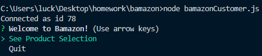This is the screen customers will see when they start the program. They are able to see the available products or quit.
Available Products Screen
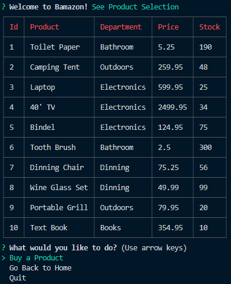Here, customers are able to see the available products and their prices. They are able to Choose to buy a product, go back to the start menu, or quit.
Buying Process

The customers will select the items by their id then input how many they would like to purchase. Once they have made their selection, they will receive a readout of their action and be taken back to the available products screen.
Updated Table
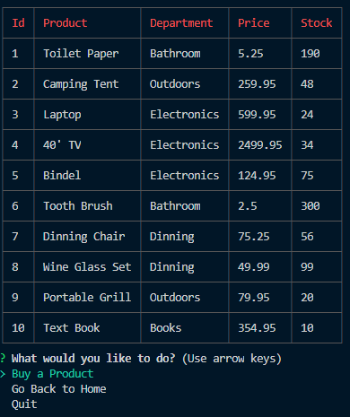After purchasing the product, the available products table will be updated to reflect the new stock.
Bamazon Manager Interface
This is a walkthrough of the Bamazon Manager Interface
Start Menu
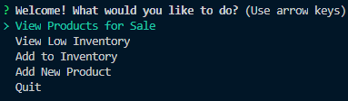When the manager logs in, this is the screen they will see.
View Products for Sale
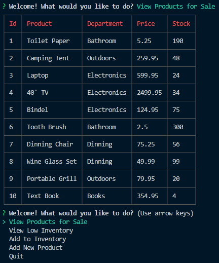When the View Products for Sale option is selected, the manager will see a rundown of all products and the information for each.
View Low Inventory
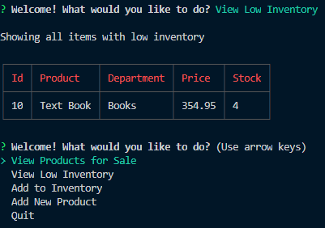If View Low Inventory is selected, the user will see a display of any product that has less than 5 items in its current inventory.
Add to Inventory
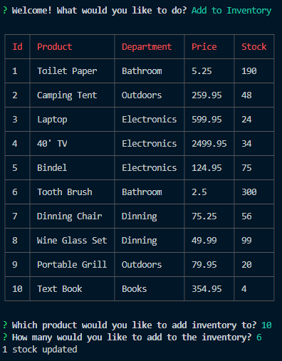If the user chooses to add more inventory, they will be asked to pick the Id number of the item to be added to, then the amount that should be added.
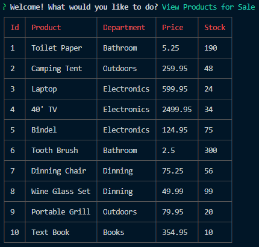This is an example of the inventory after the stock has been added to item 10.
Add New Product

If add new product is selected, users are asked to confirm that they want to add the new item. If they decline, they will go back to the start menu. They are then asked to name the new product, select the department, enter the price, and enter the intial stock. The department list is generated dynamically based on what deparments currently exist.
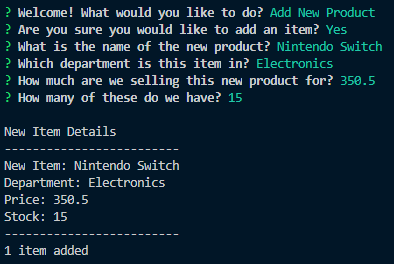After inputing the information, the user is given a summary of the new item.

Once the item has been added, the user can see it when they select View Prodcuts for Sale.
Bamazon supervisor Interface
These images walk through the user process for Supervisors
Start Menu
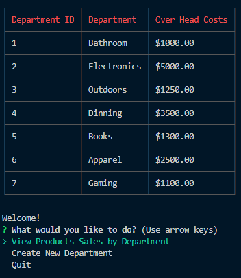This is the start menu for Supervsiors. The user will see a short summary of each of the current departments on this screen.
View Product Sales by Department

Users are able to see information about each of the current departments. The current profits column is dynamically calulated whenever a change is made.
Add Department
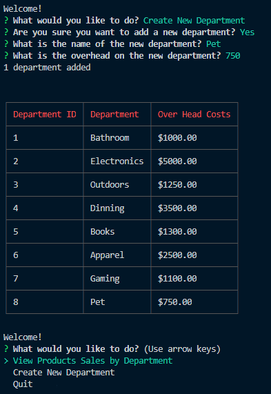Users will be asked to confirm that they would liek to add a new department. Once they confirm, they will need to enter the new department's name, and the starting overhead costs. The new department will be displayed only on the start screen until stock has been added to the inventory.